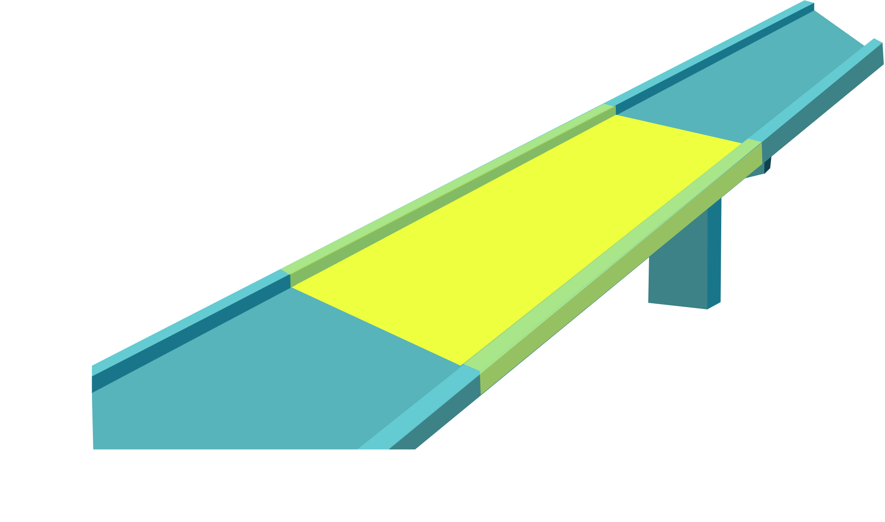

Digital Health Development Solutions
Model-based AI to de-risk and accelerate the development of
• DTx ,
• digital biomarkers , and
• digital clinical measures .
Bringing preclinical rigor to digital health—fast, explainable, and designed for differentiation and IP protection.
Email:
contact@digital-prism.com

R&D Roadmapping
From pharma standards to digital health strategy—customized for your pipeline.
In Silico Trial Design
Design smarter trials with virtual patients.
Digital Twins
Real-time intelligence from dynamic system models for remote & self-monitoring.

Free Consultation
New clients receive an obligation free consultation.

R&D Spotlight
Claim your free Digital Health R&D Spotlight – contact us to subscribe.

Expertise in Digital Health
Deep expertise in digital health technologies and trends.